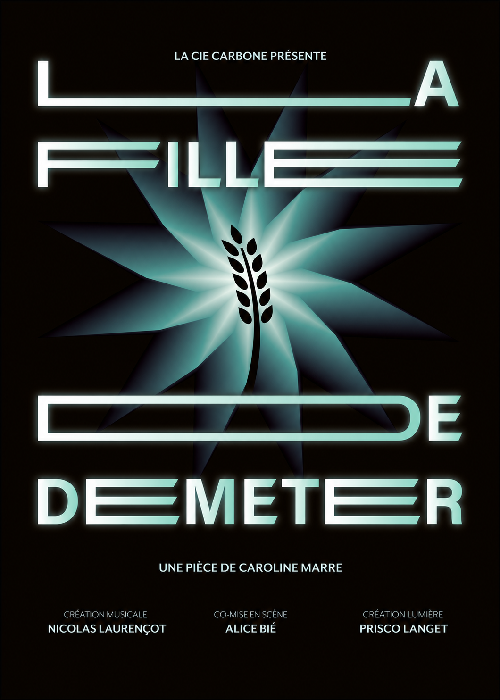

MYTHOLOGIE GRECQUE & SATIRE POLITIQUE
La fille
de Déméter
Une mère. Une fille.
Trois puissances. Vingt personnages.
Dans cette réécriture dystopique du mythe de Déméter et Perséphone, trois grandes puissances se disputent le pouvoir tandis que deux femmes, une mère et sa fille, tentent de reprendre le contrôle de leur destin.
Caroline Marre incarne vingt personnages, sans quitter le plateau. Les ombres, la lumière et la musique font surgir tout un monde autour d’elle.
À VOIR À PARIS
Comédie des 3 Bornes · Paris 11e
Les mercredis à 21 h, jusqu’au 25 novembre 2026.
Relâche le 4 novembre.
L’équipe artistique
- Écriture et interprétation
- Caroline Marre
- Mise en scène
- Caroline Marre et Alice Bié
- Musique
- Nicolas Laurençot
- Lumière
- Prisco Langet
- Vidéo
- Nicholas Bochatay
- Photographie
- Fanny Cortade